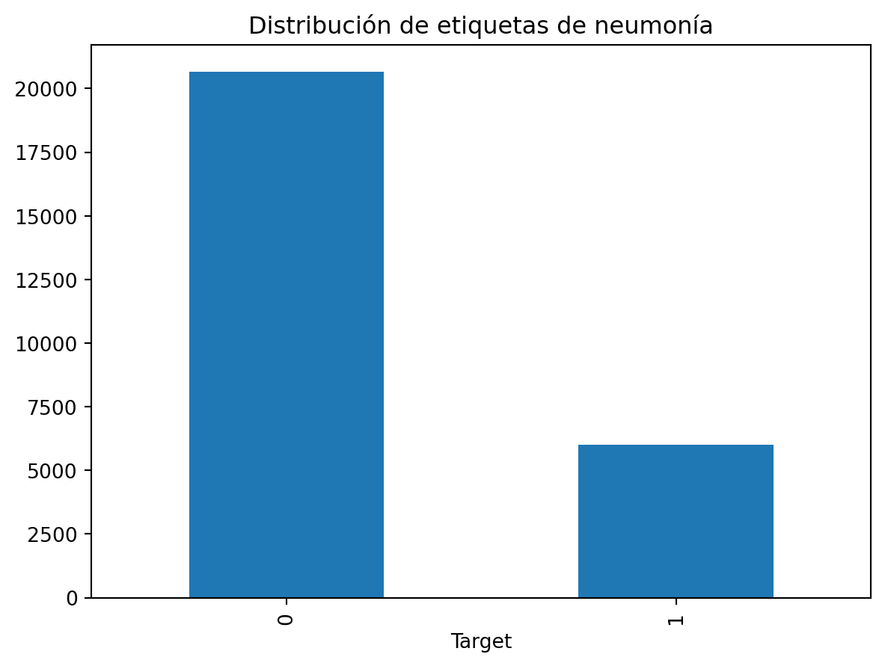

Los filtros de imagen son herramientas que modifican una imagen para lograr ciertos efectos, como resaltar bordes o suavizar los detalles.
Estos filtros son como pequeñas reglas matemáticas que aplicamos a cada punto de una imagen. En lugar de aplicarlos a mano, usamos una matriz de números (que llamamos núcleo de imagen) para hacer esto automáticamente.
¿Cómo funcionan los filtros?
Imagina que tienes una radiografía y quieres resaltar áreas importantes, como los bordes de los pulmones. Un filtro puede ayudarnos a hacer esto aplicando su matriz de números a cada parte de la imagen. Este proceso se llama convolución.
Cuando aplicamos un filtro a una imagen, básicamente:
Multiplicamos los valores de los píxeles en la imagen por los valores del filtro (que llamamos pesos).
Luego sumamos esos valores multiplicados para obtener un nuevo valor para cada parte de la imagen.
Este proceso se repite en toda la imagen, permitiendo que se transforme de manera útil. Por ejemplo, podemos desenfocar una radiografía o encontrar bordes importantes en una tomografía.
filter
Code
import pydicomimport numpy as npimport cv2import matplotlib.pyplot as plt# Cargar la imagen DICOMdicom_file ='resources/0000a175-0e68-4ca4-b1af-167204a7e0bc.dcm'dicom_data = pydicom.dcmread(dicom_file)# Obtener la imagen en formato Numpyimage = dicom_data.pixel_array# Aplicar el filtro Sobel para detectar bordes horizontales y verticalessobelx = cv2.Sobel(image, cv2.CV_64F, 1, 0, ksize=5) # Sobel en dirección xsobely = cv2.Sobel(image, cv2.CV_64F, 0, 1, ksize=5) # Sobel en dirección y# Calcular la magnitud de los bordes combinadossobel_combined = np.sqrt(sobelx**2+ sobely**2)# Normalizar la imagen filtrada al rango 0-255sobel_combined = cv2.normalize(sobel_combined, None, 0, 255, cv2.NORM_MINMAX)# Convertir a uint8 para visualizaciónsobel_combined = np.uint8(sobel_combined)# Aplicar ecualización de histograma para mejorar el contrastesobel_contrast = cv2.equalizeHist(sobel_combined)# Mostrar la imagen original y la imagen filtradaplt.figure(figsize=(10, 5))plt.subplot(1, 2, 1)plt.title('Imagen Original')plt.imshow(image, cmap='gray')plt.subplot(1, 2, 2)plt.title('Imagen Filtrada')plt.imshow(sobel_contrast, cmap='gray')plt.show()
¿Por qué no usamos siempre redes neuronales normales?
Si usáramos redes neuronales normales para imágenes médicas, tendríamos que procesar una enorme cantidad de datos. Las imágenes tienen muchos píxeles, y para una red neuronal artificial normal, esto significaría cientos de miles o incluso millones de parámetros que necesitaríamos entrenar. Además, estas redes normales tienen un problema: pierden la estructura de la imagen cuando convertimos los datos.
¿Cómo nos ayudan las redes neuronales convolucionales (CNN)?
Las CNN están diseñadas para trabajar mejor con imágenes. Utilizan lo que se llama una capa de convolución, que es una forma especial de aplicar filtros de imagen. Estos filtros son como pequeñas “reglas” que recorren la imagen, detectando características importantes, como bordes o patrones.
En lugar de conectarse a todas las neuronas de la red como en las redes normales, las CNN solo conectan algunas neuronas de forma localizada, lo que permite reducir el número de datos a procesar y enfocarse en las áreas importantes.
¿Cómo aprenden las CNN?
Las CNN aprenden solas a descubrir los filtros más útiles. Por ejemplo, si estamos analizando imágenes de pulmón, una CNN podría aprender a detectar patrones que indican neumonía o tumores. Estos patrones pueden estar en cualquier parte de la imagen, y la CNN los encontrará aunque no estén en el centro de la imagen, algo que no podría hacer una red neuronal normal.
Además, las CNN son capaces de manejar imágenes en color, ya que dividen la imagen en diferentes canales (rojo, verde y azul) y aplican los filtros a cada canal. Esto permite que la red analice imágenes médicas de alta resolución y detalle.
¿Por qué usamos capas de convolución?
Las capas de convolución permiten a la red detectar patrones dentro de los patrones. A medida que aplicamos más y más filtros a la imagen, la red puede identificar detalles más complejos, como bordes, formas, y eventualmente patrones específicos, como anomalías en una radiografía o tomografía.
¿Qué pasa en una red neuronal convolucional?
En las redes neuronales convolucionales, no tenemos que decidir qué filtro usar. La red, a través de su entrenamiento, aprende automáticamente cuáles son los filtros más útiles. Por ejemplo, puede aprender qué filtros resaltan mejor las áreas con patrones anormales que podrían indicar neumonía en una radiografía de tórax.
Al entrenar la red con muchas imágenes, el sistema ajusta los pesos de los filtros para que sean buenos detectando lo que necesitamos, como lesiones pulmonares, tumores, etc.
4.2.2.1 Pooling
¿Por qué usamos capas de pooling? Aunque las redes convolucionales ayudan a reducir la cantidad de información que se procesa al analizar imágenes, seguimos teniendo muchos datos cuando trabajamos con imágenes grandes o en color. Aquí es donde entran las capas de pooling. Estas capas nos permiten reducir el tamaño de los datos manteniendo la información más importante.
¿Cómo funciona una capa de pooling? Una capa de pooling funciona como un filtro que selecciona solo los valores más importantes en una pequeña sección de la imagen. Por ejemplo, si tomamos un área de 4x4 píxeles en una imagen, en lugar de mantener los 16 píxeles, podemos aplicar max pooling, que selecciona el valor más alto de ese grupo, reduciendo el tamaño de la imagen y la cantidad de datos a manejar.
Aunque perdemos algo de detalle, la información principal de la imagen se conserva. Esto nos permite procesar más rápido las imágenes y reducir la carga de la red.
Code
import pydicomimport numpy as npimport cv2import matplotlib.pyplot as plt# Cargar la imagen DICOMdicom_file ='resources/0000a175-0e68-4ca4-b1af-167204a7e0bc.dcm'dicom_data = pydicom.dcmread(dicom_file)# Obtener la imagen en formato Numpyimage = dicom_data.pixel_array# Aplicar el filtro Sobel para detectar bordes horizontales y verticalessobelx = cv2.Sobel(image, cv2.CV_64F, 1, 0, ksize=5) # Sobel en dirección xsobely = cv2.Sobel(image, cv2.CV_64F, 0, 1, ksize=5) # Sobel en dirección y# Calcular la magnitud combinada de Sobelsobel_combined = np.sqrt(sobelx**2+ sobely**2)# Normalizar la imagen para mejorar la visualización (escalar al rango 0-255)sobel_combined = cv2.normalize(sobel_combined, None, 0, 255, cv2.NORM_MINMAX)# Convertir a uint8 para visualizaciónsobel_combined = np.uint8(sobel_combined)# Aplicar ecualización de histograma para mejorar el contrastesobel_contrast = cv2.equalizeHist(sobel_combined)# Aplicar Max Poolingdef max_pooling(image, pool_size=2): pooled_image = cv2.resize(image, (image.shape[1] // pool_size, image.shape[0] // pool_size), interpolation=cv2.INTER_NEAREST)return pooled_imagepooled_image = max_pooling(sobel_contrast)# Mostrar imágenesplt.figure(figsize=(15, 5))plt.subplot(1, 3, 1)plt.title('Imagen Original')plt.imshow(image, cmap='gray')plt.subplot(1, 3, 2)plt.title('Convolución (Filtro Sobel con Contraste)')plt.imshow(sobel_contrast, cmap='gray')plt.subplot(1, 3, 3)plt.title('Max Pooling con Contraste Mejorado')plt.imshow(pooled_image, cmap='gray')plt.show()
En el artículo de Wang et al. (Wang et al. 2017), se presenta la base de datos ChestX-ray8, que incluye benchmarks para la clasificación y localización de enfermedades torácicas comunes.
El ChestX-ray8 es una base de datos masiva que contiene 108,948 imágenes de rayos X en vista frontal de 32,717 pacientes únicos. Estas imágenes fueron recolectadas de sistemas de archivado y comunicación de imágenes (PACS) de un hospital, y abarcan un período desde 1992 hasta 2015.
Cada imagen está etiquetada con una o múltiples de ocho enfermedades comunes del tórax (Atelectasia, Cardiomegalia, Derrame, Infiltración, Masa, Nódulo, Neumonía y Neumotórax).
Etiquetado mediante Procesamiento de Lenguaje Natural (NLP):
Las etiquetas de las enfermedades se extrajeron automáticamente de los informes radiológicos asociados a cada imagen usando técnicas de NLP. Esto permitió generar etiquetas débilmente supervisadas, es decir, etiquetas a nivel de imagen sin la necesidad de anotación manual exhaustiva, lo que sería impracticable a esta escala.
Herramientas de NLP como DNorm y MetaMap fueron usadas para identificar y normalizar los conceptos de enfermedades a partir de los informes. También se desarrollaron reglas personalizadas para manejar la negación e incertidumbre en las anotaciones.
Desafíos Técnicos:
Dimensiones de las Imágenes: Las radiografías de tórax suelen tener dimensiones grandes (2000x3000 píxeles), lo que presenta desafíos tanto para el almacenamiento como para el procesamiento eficiente de las imágenes.
Variabilidad en las Etiquetas: Las enfermedades torácicas presentan una gran variabilidad en su apariencia y tamaño dentro de las imágenes, lo que dificulta la clasificación y localización precisas.
Procesamiento de Imágenes:
Las imágenes fueron redimensionadas a 1024x1024 píxeles para facilitar el procesamiento computacional sin perder detalles significativos.
Se generaron cuadros delimitadores (B-Boxes) para un subconjunto de imágenes, permitiendo la evaluación de la localización de patologías, aunque el etiquetado denso y detallado a esta escala es inviable.
4.3.1Consideraciones
Gran Volumen de Datos:
Recolectar y procesar más de 100,000 imágenes radiológicas requiere una infraestructura robusta de almacenamiento y un sistema eficiente de manejo de datos. Esto incluye tanto hardware (servidores, GPUs) como software especializado para manejar grandes volúmenes de datos.
Automatización de Etiquetado:
El etiquetado manual de datos a esta escala es impracticable, por lo que es crucial implementar técnicas avanzadas de procesamiento de lenguaje natural para extraer información relevante de los informes radiológicos. Esto también implica un esfuerzo significativo en la validación de las etiquetas generadas automáticamente para asegurar su precisión.
Gestión de la Calidad de los Datos:
Implementar procedimientos rigurosos para asegurar la calidad de las etiquetas es fundamental, especialmente en entornos clínicos donde la precisión es crítica. Esto incluye la validación cruzada con datos anotados manualmente y la eliminación de etiquetas ruidosas o incorrectas.
Adaptación de Modelos de Deep Learning:
Dado que los modelos preentrenados en conjuntos de datos generales como ImageNet no son directamente aplicables al dominio médico, se requiere ajustar y entrenar modelos de deep learning específicos para el análisis de imágenes médicas, lo que demanda grandes recursos computacionales y expertos en el campo.
Infraestructura Computacional:
Se necesita una infraestructura computacional poderosa para manejar el entrenamiento de modelos con imágenes de alta resolución, lo que incluye el uso de múltiples GPUs y técnicas como la reducción del tamaño de los lotes de imágenes para manejar las limitaciones de memoria.
Consideraciones Éticas y de Privacidad:
El manejo de datos médicos sensibles requiere estrictas medidas de seguridad y anonimización para cumplir con regulaciones de privacidad como HIPAA o GDPR, lo que añade una capa adicional de complejidad al manejo del dataset.
4.4 Preprocesamiento
Este notebook realiza varias tareas críticas de preprocesamiento, este se refiere a una serie de pasos realizados para transformar las imágenes de rayos X originales y las etiquetas asociadas a un formato que pueda ser utilizado de manera eficiente por un modelo de inteligencia artificial (IA) o aprendizaje profundo. Estos pasos son fundamentales porque los datos crudos, tal como están, no siempre son ideales para ser introducidos directamente en un modelo.
4.4.1 Exploración
patientId
x
y
width
height
Target
0
0004cfab-14fd-4e49-80ba-63a80b6bddd6
NaN
NaN
NaN
NaN
0
1
00313ee0-9eaa-42f4-b0ab-c148ed3241cd
NaN
NaN
NaN
NaN
0
2
00322d4d-1c29-4943-afc9-b6754be640eb
NaN
NaN
NaN
NaN
0
3
003d8fa0-6bf1-40ed-b54c-ac657f8495c5
NaN
NaN
NaN
NaN
0
4
00436515-870c-4b36-a041-de91049b9ab4
264.0
152.0
213.0
379.0
1
5
00436515-870c-4b36-a041-de91049b9ab4
562.0
152.0
256.0
453.0
1
Leemos el archivo CSV que contiene las etiquetas asociadas a las imágenes. Cada fila contiene un patientId, coordenadas para posibles consolidaciomes (si se detecta neumonía), y la variable Target, que indica si la imagen tiene o no signos de neumonía.
El Target es binario (1 = neumonía, 0 = no neumonía). Esta es la variable objetivo que el modelo aprenderá a predecir.
patientId
x
y
width
height
Target
0
0004cfab-14fd-4e49-80ba-63a80b6bddd6
NaN
NaN
NaN
NaN
0
1
00313ee0-9eaa-42f4-b0ab-c148ed3241cd
NaN
NaN
NaN
NaN
0
2
00322d4d-1c29-4943-afc9-b6754be640eb
NaN
NaN
NaN
NaN
0
3
003d8fa0-6bf1-40ed-b54c-ac657f8495c5
NaN
NaN
NaN
NaN
0
4
00436515-870c-4b36-a041-de91049b9ab4
264.0
152.0
213.0
379.0
1
6
00569f44-917d-4c86-a842-81832af98c30
NaN
NaN
NaN
NaN
0
Se eliminan duplicados en las filas que contienen el mismo patientId. Esto es importante porque tener múltiples entradas para el mismo paciente podría causar problemas en el entrenamiento del modelo, como sesgo o sobreajuste.
Cada paciente debe ser representado una única vez en el análisis, para evitar una ponderación excesiva de imágenes de un mismo paciente.

Visualizamos la distribución de las etiquetas para identificar cualquier desbalance en los datos. Un fuerte desbalance, como un número desproporcionado de imágenes sin neumonía, puede afectar el desempeño del modelo y requerir estrategias como submuestreo o sobrepeso en la clase minoritaria.
Este gráfico ayuda a entender la prevalencia de neumonía en el conjunto de datos. Si el número de casos de neumonía es mucho menor, eso refleja un reto diagnóstico similar al del mundo real.
Creamos una cuadrícula 3 x 3 para visualizar 9 imágenes. Esta técnica de visualización ayuda a explorar los datos visualmente, verificando si la calidad de las imágenes es adecuada para el entrenamiento de un modelo.
4.4.2 Preprocesamiento de Imagenes
Para manejar eficientemente nuestros datos , convertimos las imágenes de rayos X almacenadas en formato DICOM a matrices.
Posteriormente, calculamos la media y la desviación estándar general de los píxeles de todo el conjunto de datos con el propósito de normalización.
Luego, las imágenes en matrices creadas se almacenan en dos carpetas separadas según su etiqueta binaria: * 0: Todas las radiografías que no muestran signos de neumonía * 1: Todas las radiografías que muestran signos de neumonía
Estandarizamos todas las imágenes utilizando el valor máximo de píxel en el conjunto de datos proporcionado, 255. Todas las imágenes se redimensionan a 224x224.
Code
sums =0# Inicializa la variable para acumular la suma de los píxelessums_squared =0# Inicializa la variable para acumular la suma de los cuadrados de los píxeles# Itera sobre el DataFrame de etiquetas, obteniendo el índice (c) y el ID del paciente (patient_id)for c, patient_id inenumerate(tqdm(labels.patientId)): # Crea la ruta completa al archivo DICOM correspondiente al paciente dcm_path = ROOT_PATH/patient_id dcm_path = dcm_path.with_suffix(".dcm") # Añade la extensión ".dcm" al archivo para que sea legible como DICOM# Lee el archivo DICOM usando pydicom y normaliza los valores de los píxeles dividiendo entre 255 dcm = pydicom.read_file(dcm_path).pixel_array /255# Redimensiona la imagen, ya que 1024x1024 es demasiado grande para manejar en modelos de Deep Learning.# Cambiamos a una resolución de 224x224.# Convertimos la imagen a tipo float16 para usar menos memoria al almacenar la imagen. dcm_array = cv2.resize(dcm, (224, 224)).astype(np.float16)# Recupera la etiqueta correspondiente a la imagen del paciente (0 para sano, 1 para neumonía) label = labels.Target.iloc[c]# Divide el conjunto de datos en 4/5 para entrenamiento y 1/5 para validación train_or_val ="train"if c <24000else"val"# Define la ruta de guardado y crea las carpetas necesarias si no existen current_save_path = SAVE_PATH/train_or_val/str(label) current_save_path.mkdir(parents=True, exist_ok=True)# Guarda el array de la imagen en el directorio correspondiente (train/val y clase 0 o 1) np.save(current_save_path/patient_id, dcm_array) # Normaliza la suma de los píxeles dividiendo por el número total de píxeles en la imagen (224x224) normalizer = dcm_array.shape[0] * dcm_array.shape[1] # Solo calcula estadísticas de las imágenes de entrenamiento (no para validación)if train_or_val =="train": # Suma los valores de los píxeles normalizados de cada imagen para calcular la media posteriormente sums += np.sum(dcm_array) / normalizer # Suma los cuadrados de los píxeles normalizados de cada imagen para calcular la desviación estándar posteriormente sums_squared += (np.power(dcm_array, 2).sum()) / normalizer
4.4.2.1 Calcular Media y Desviación Estándar del Dataset
Para calcular la media y la desviación estándar del conjunto de datos, calculamos la suma de los valores de los píxeles, así como la suma de los valores de píxeles al cuadrado para cada sujeto. Esto permite calcular la media y la desviación estándar general sin mantener todo el conjunto de datos en memoria.
Code
mean = sums /24000std = np.sqrt(sums_squared /24000- (mean**2))print(f"Mean of Dataset: {mean}, STD: {std}")
Mean of Dataset: 0.49039623525191567, STD: 0.2479507326197431
Media
\(\mu = \frac{\text{sums}}{24000}\)
Donde sums es la suma acumulada de los valores de píxeles de todas las imágenes de entrenamiento, y 24000 es el número total de imágenes en el conjunto de entrenamiento.
Donde: - sums_squared es la suma acumulada de los cuadrados de los valores de los píxeles. - mean**2 es el cuadrado de la media que ya se ha calculado.
La normalización es importante para asegurarse de que los valores de los píxeles estén en un rango que permita a las redes neuronales converger más rápido y con mayor precisión. Al normalizar, centramos los valores en torno a la media (0.49) y escalamos con la desviación estándar.
Este paso asegura que las variaciones en brillo o contraste no afecten el rendimiento del modelo de manera injustificada, permitiendo que la red neuronal se concentre en las características importantes para el diagnóstico, como las consolidaciones pulmonares.